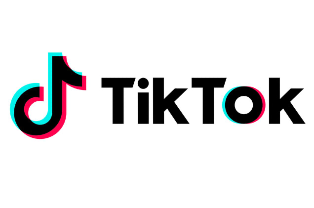

TikTok Back in India? Website Live Again, App Still Blocked - India Report
Published Date: August 22, 2025
Shocked, Yeah but it is true that as of August 22, 2025, TikTok’s website is accessible again to many users in India—marking a partial return. However, the mobile app remains unavailable on both Google Play and the Apple App Store. This update has made a lot of curiosity among creators and users. Here is a quick breakdown of what’s back, what’s not, and why it matters right now.
1. What’s Working: TikTok Website Is Back
- Multiple news outlets confirmed that TikTok’s official website is accessible to many users across India for the first time since the 2020 ban.
- Reports show some subpages and videos are visible—though availability appears inconsistent and possibly limited to test regions.
- None of this has been officially confirmed or denied by TikTok (ByteDance) or Indian authorities.
2. What’s Still Blocked: Mobile App Missing
The TikTok app is still not available for download on Google Play or Apple App Store in India. Creators and users remain unable to install or update it through official channels, keeping the main platform unreachable for real use.
3. Why It Matters — Because India Was TikTok’s Biggest Market
Before the 2020 ban due to India-China border tensions, India was TikTok’s largest overseas market, with an estimated 200 million users. The return of even the website signals a possible reopening of Tiktok, but the app remaining un accessible means creators remain sidelined and partnerships are still paused. If tiktok will back in India it could be a very positive signal amid India-China relationship.
4. What Could a Full Comeback Require?
- Clearance from Government: Government of India approval, under new data privacy and national-security rules.
- Local infrastructure: Data storage, audits, and Indian entity to meet sovereignty norms.
- Public trust: Clear moderation policies, transparency in content management, and creator-friendly programs.
- Official confirmation: A statement from ByteDance or the Indian government for the official comeback.
5. Recent India - China developments and Foreign Minister visit to Beijing
Tiktok Website is officially live in India - is it due to recent developments in India - China relationship due to Trump tarrifs and increasing collaboration of BRICS countries or Chinese delegates talks to Indian foreign minister Mr. S Jai Shankar for the removal of ban of chinese apps. Is the deal signed or talks are going on between India and China.
6. Why Tiktok was banned in India?
Don't forget Tiktok and other chinese apps were banned by the Government of India in 2020 due to the Galwan conflicts between Indian and Chinese soldiers in which a few of soldiers reportedly dead or missing on both sides. This lead to a huge tension on border and Indian Government takes harsh measures to punish Chinese.
Competition to other apps
After banning of Tiktok in India platform like Instagram and YouTube also local apps like Josh has seen a massive increase in growth of audience. If Tiktok is coming back then this could be a bad news for these platform. Also we can see a tight competition between Instagram and Tiktok as they both are very popular and creator friendly.
7. Bottom Line & What to Watch
The comeback of Tiktok will give a positive signal to both thr peoples of India and China that there is no any issue between these countries and things are going on in a positive way. Wait for the official announcements from Tiktok of government to confirns the comeback. For now, short-video creators may continue building on Indian platforms like Instagram, Josh, Moj, or other local alternatives. (See FAQs below for options.)
Frequently Asked Questions (SEO Boost)
Q: Is TikTok available in India now?
No, only the website is accessible to some users. The mobile app remains blocked as of August 22, 2025. 7
Q: Why was TikTok banned in India?
The June 2020 ban was based on data privacy and national security concerns, along with geopolitical tensions between India and China. 8
Q: What are Indian alternatives to TikTok?
Platforms like Instagram, Josh, Moj, and others have filled the short-video gap, especially for regional languages. They offer a creator-friendly environment post-TikTok. 9
Q: Could TikTok’s app return soon?
That depends on regulatory clearances, local data infrastructure, and public trust. This patchy website access might be a test run—but there's no timeline yet. 10